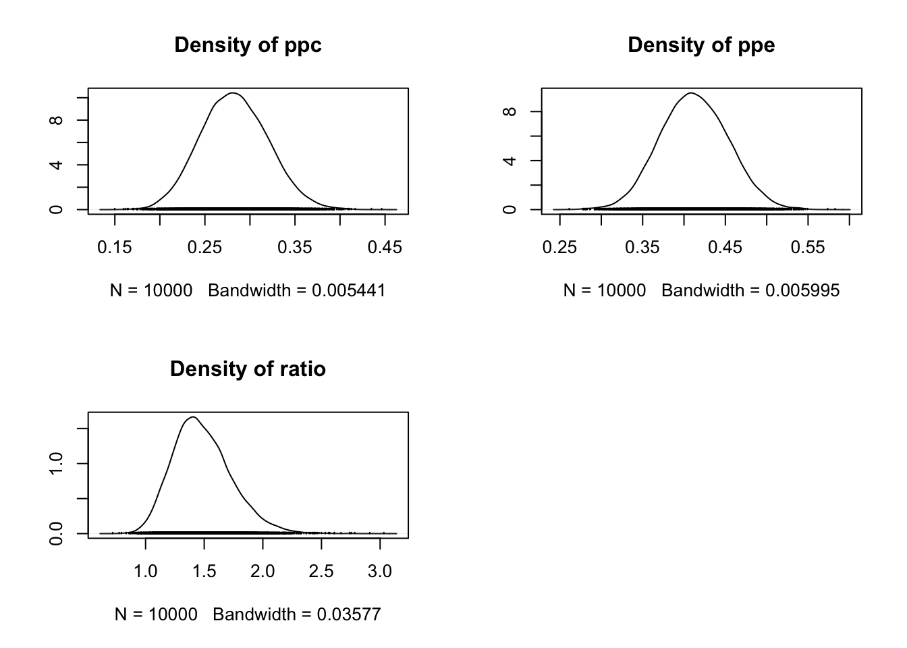

Last updated: 2018-04-30
Code version: e0065d2
We will use R version 3.3.2 for compatibility
library(dplyr)
library(data.table)
library(magrittr)
library(purrr)
library(here) # for tracking working directory
library(ggplot2)
library(epistats)
library(broom)
library(rjags)
library(Bain)Several studies suggest that cognitive behavioral therapy is an effective treatment for Posttrau- matic Stress Disorder (PTSD) in male veterans. Imagine that you performed a study to compare Prolonged Exposure (PE), a type of cognitive behavioral therapy, with Present-Centered therapy (PC), a supportive intervention. In this randomized controlled trial 284 veterans were assigned to receive either PE or PC. The (dichotomous) outcome measure of interest was “loss of diagnosis”(LD); that is, each veteran that was no longer diagnosed with PTSD after treatment got the score 1, and the ones that still had the diagnosis got the score 0.
In this exercise you will use rjags to examine whether PE and PC are effective treatments for PTSD in veterans. The data you need for this exercise are displayed in Table 1 below.
Table 1 PE PC Loss of diagnosis 58 40 Total men treated 141 143
Open the file Model1.txt (you can open it in R, or in a text editor like notepad). We will specify the model in this file in a couple of steps. In the the Model1.txt file you can add your own comments by putting # in front of those comments. In that way, JAGS will know that it should not run that code, but consider it as a comment
We are interested in the proportion of veterans that had a LD in each treatment condition, that is, we are interested in the probability of observing a succes (a 1) in the pe condition (θ_pe) and the pc condition (θ_pc).
We can model the number of successes for each condition with binomial distributions:
y_pe ~ Binomial(θ_pe, n_pe)
y_pc ~ Binomial(θ_pc, n_pc)
That is, for each condition, we assume that the data y (the number of successes in the data) have a binomial distribution with as parameters θ, the probability of observing a success, and n, the total number of observations in the condition.
The total number of observations in the conditions we know, as well as of course the data y (see Table 1). The probabilities θ¸ are what we want to estimate from the information we have, and we will do this in a Bayesian way.
In the model code for JAGS in Model1.txt we have to specify these distributions within model{ } so that JAGS can find the likelihood based on this information. Therefore, within model{ } we add the following code in Model1.txt:
likelihood of the data
ype ~ dbin(ppe,npe) ypc ~ dbin(ppc,npc) Step 2. Priors Next, we have to specify prior distributions for all the parameters we need to estimate. That is, we need priors for θ_pe (ppe in our code) and θ_pc (ppc in our code). A commonly used conjugate prior distribution for probabilities from a binomial distribution is the beta-distribution. That is,
θ_pe ~ Beta(a_pe, b_pe)
θ_pc ~ Beta(a_pc, b_pc)
with shape parameters a (a_pe, a_pc) and b (b_pe, b_pc).
For each condition, we will specify that a = b = 1 in our model code to obtain low-informative prior distributions. That is, we add the following code in Model1.txt within model{ }:
prior distributions
ppe ~ dbeta(1,1) ppc ~ dbeta(1,1) Step 3. Interesting additional quantities Finally we will specify a contrast you may be interested in, namely the ratio of the probability of succes in condition PE and the probability of succes in condition PC (θ_pe /θ_pc). By adding the following code within model{ } we will tell JAGS to calculate this ratio in each iteration of the estimator:
contrast
ratio <- ppe/ppc You could also add any other quantity based on the probabilities in your code, for example, the difference in the probabilities.
Our model code is done for now - save your code as Model1.txt in your working directory.
Before we can use our model, we first have to get our data (from Table 1) into R. Make four variables in R that contain respectively the number of veterans that lost their diagnosis for condition PE, the number of veterans that lost their diagnosis for condition PC, the total number of veterans that were in condition PE, and the total number of veterans that were in condition PC.
data for exercise 1
y_pe <- 58
y_pc <- 40
n_pe <- 141
n_pc <- 143 Now, if we want to use this data for our analysis in rjags we need to put these data in what is called a list. In the list we specify for all the names we used for the data in the jags model code (that is, ype, ypc, npe, npc) what the actual data is that we have stored in R (y_pe, y_pc, n_pe, n_pc).
About lists: You can store various types of R objects (such as vectors, matrices or other lists) in a list. The list type of object is used for specifying data and initial values in rjags amongst other things, but it is, for instance, also frequently used for storing and presenting output from analyses in R. If you want to know more about lists you can read more here: http://rforpublichealth.blogspot.nl/2015/03/basics-of-lists.html.
Make a list out of the data, and call the list you made to see what is inside as follows:
data for exercise 1 for rjags
(actually, naming arguments in lists works in R without parentheses)
dat_ex1 <- list('ype'=y_pe, 'ypc'=y_pc, 'npe'=n_pe, 'npc'=n_pc)
dat_ex1$ype
[1] 58
$ypc
[1] 40
$npe
[1] 141
$npc
[1] 143dat_ex1 <- list(ype=y_pe, ypc=y_pc, npe=n_pe, npc=n_pc)
dat_ex1$ype
[1] 58
$ypc
[1] 40
$npe
[1] 141
$npc
[1] 143In order to run the analyses we first have to tell rjags what the model file is, what the data is, and specify the number of chains for the analyses (we use 2 for this exercise - you will learn more about this on Tuesday). It is also possible to specify initial values, but we will skip this for now (JAGS will generate the initial values itself based on the priors you specified in Model1.txt). We specify the model by means of the function jags.model(). To learn a bit more about this function already, run ?jags.model in R.
We use the jags.model() function and we name it rjags_ex1 as follows :
nsamp = 10000
rjags_ex1 <- jags.model(file=here("analysis", "bayes_1_Model1.txt"),
data = dat_ex1,
n.chains = 2) ###compile and initialize jags modelCompiling model graph
Resolving undeclared variables
Allocating nodes
Graph information:
Observed stochastic nodes: 2
Unobserved stochastic nodes: 2
Total graph size: 9
Initializing modelAfter you have run this line of code, jags will compile the model and specify initial values for (initialize) the model. Now, we want to start the estimation procedure to fit our Bayesian model. We start by letting the estimation procedure run for a while, to start up and converge (these first few iterations in the estimation procedure are called burn-in - more on this on Tuesday). We do this with the function update(). Using update(), jags starts the estimation procedure, but it doesn’t save this as the results.
We tell update which model to update in the first argument, and how many times in the second argument as follows:
update(rjags_ex1, nsamp) ####burninWhen jags is done with the first updates, we can now tell it to run some more iterations in our estimation procedure, and to calculate and store some results for us. For this we use the function coda.samples(). We need to tell coda.samples() which model to update, for which parameters we want jags to save the results, and how many iterations to use (we use 1000). To learn more about this function, use ?coda.samples().
First we will make a vector with function c() with the names of all the parameters we want to see the results for. Next, we specify the function coda.samples, and we name it samples_rjags_ex1.
parstosave=c('ppe','ppc', 'ratio')
samples_rjags_ex1=coda.samples(model=rjags_ex1, variable.names=parstosave, n.iter=nsamp) When it has reached 100% it is done. For this model, it will go really fast, but for more complicated models it might take a little while, depending on how many iterations you chose.
After updating you normally have to check whether the algorithm has reached the target distribution. On Tuesday you will learn why and how this is done. For now, you may assume the sampler has reached convergence, and you can go on with analyzing the posterior results.
If you call samples_rjags_ex1 you will get all the iterations for all the parameters rjags has saved for you. It can be very convenient to have all of these samples, however, for now we just want to see some summary results. To get summary results use function summary() on samples_rjags_ex1.
summary(samples_rjags_ex1)
Iterations = 11001:21000
Thinning interval = 1
Number of chains = 2
Sample size per chain = 10000
1. Empirical mean and standard deviation for each variable,
plus standard error of the mean:
Mean SD Naive SE Time-series SE
ppc 0.2832 0.03711 0.0002624 0.0003370
ppe 0.4125 0.04057 0.0002869 0.0003579
ratio 1.4823 0.25016 0.0017689 0.0022309
2. Quantiles for each variable:
2.5% 25% 50% 75% 97.5%
ppc 0.2135 0.2570 0.2824 0.3083 0.3576
ppe 0.3353 0.3844 0.4115 0.4399 0.4934
ratio 1.0634 1.3050 1.4587 1.6313 2.0337You will see the mean, standard deviation, and various quantiles of the posteriors for each estimated parameter (you will also see two kinds of standard errors, but you can disregard these for now). These summary statistics are calculated by rjags over all of the saved samples per parameter in samples_rjags_ex1.
You can also makes plots of the posterior distributions like this:
plot(samples_rjags_ex1,density=TRUE, trace=FALSE) ###densities
Write down and interpret these posterior results (mean, median, 95% credibility interval). Do you think PE is an effective treatment for PTSD in male veterans? What about PC? Would you consider one treatment superior to the other? What do you base this on?
Based on the ratio of the two, the 95% credible interval does not include the null-value of no effect (ratio = 1), so it seems that ppe is more effective
Rjags has provided you with the posterior results for θ_pe, θ_pc, and their ratio. In this part of the exercise you will obtain the posterior means for these parameters analytically.
It can be shown that the posterior distribution for each θ i is given by: It can further be shown that the posterior mean ( θ̂ i ) of the distribution is given by:
Calculate the posterior mean for both proportions θ_pe and θ_pc using this equation. Then calculate the ratio of these means. Compare these results to those you have obtained using rjags. Are the results similar?
a = 1; b = 1
theta_pe <- (a + y_pe) / (a + y_pe + b + n_pe - y_pe)
theta_pc <- (a + y_pc) / (a + y_pc + b + n_pc - y_pc)
theta_pe[1] 0.4125874theta_pc[1] 0.2827586theta_pe / theta_pc[1] 1.459151On an international conference on PTSD you meet two fellow researchers, Thomas B. and Ronald F., who also evaluated the use of PE versus PC. Thomas recently executed a randomized clinical trial with 520 female veterans to evaluate the use of PE versus PC. Ronald F. did a comparable trial with 235 WOII male veterans in 1946.
As discussed during the today’s lecture on informative prior specification, it can we worthwhile to include data obtained in previous studies in the analysis of new data.
Would you be interested to include the results obtained in either of the trials in the prior distribution for the analysis of your own data? Which data do you think would be most relevant and why?
thomas has data on only women, which is a small subset of all veterans, and women differ from men with regards to psychiologic disorders
ronald used data from 1946, which is a very long time ago
I would give more weight to the ronald’s data
so use these beta distributions: ppe ~ dbeta(41,66) ppc ~ dbeta(45,86)
So now:
40 / 105[1] 0.380952445 / 130[1] 0.3461538(40 / 105) / (45 / 130)[1] 1.100529In Exercise 2.c you will rerun the analysis from Exercise 1 with informative prior distributions based on the data obtained by either Thomas or Ronald. In order to do so you will need to alter the uninformative Beta(1,1) distributions into informative distributions. This is what their data looks like:
Table 2. PTSD data from Thomas B. PE PC Loss of diagnosis 120 80 Total men treated 245 275 Table 3. PTSD data from Ronald F. PE PC Loss of diagnosis 40 45 Total men treated 105 130 Given the data that you consider to be the most relevant, what would your new informative prior distributions look like?
Hint: You can think of parameters a_i and b_i of the Beta-distribution as the prior number of successes and failures + 1 respectively.
Run the analysis again with your informative prior distributions. Ask for the posterior results for both proportions θ_pe and θ_pc and their ratio. Compare the results (mean, median, 95% Central Credibility Interval) with the results obtained in Exercise 1. To what degree do the informative priors influence the posterior results? Do you think this is an desirable effect?
rjags_ex2 <- jags.model(file=here("analysis", "bayes_1_Model2.txt"),
data = dat_ex1,
n.chains = 2) ###compile and initialize jags modelCompiling model graph
Resolving undeclared variables
Allocating nodes
Graph information:
Observed stochastic nodes: 2
Unobserved stochastic nodes: 2
Total graph size: 12
Initializing modelupdate(rjags_ex2, nsamp)
samples_rjags_ex2 = coda.samples(model=rjags_ex2, variable.names=parstosave, n.iter=nsamp)
summary(samples_rjags_ex2)
Iterations = 11001:21000
Thinning interval = 1
Number of chains = 2
Sample size per chain = 10000
1. Empirical mean and standard deviation for each variable,
plus standard error of the mean:
Mean SD Naive SE Time-series SE
ppc 0.3127 0.02779 0.0001965 0.0002440
ppe 0.3990 0.03108 0.0002198 0.0002782
ratio 1.2864 0.15296 0.0010816 0.0013801
2. Quantiles for each variable:
2.5% 25% 50% 75% 97.5%
ppc 0.2597 0.2939 0.3121 0.3309 0.3689
ppe 0.3389 0.3780 0.3991 0.4198 0.4607
ratio 1.0112 1.1789 1.2786 1.3815 1.6117The ratio is lower, but the 95% credible interval still does not include 1
Rerun the analysis with informative prior distributions based on the data obtained with the other randomized controlled trial. Compare the results from all three analyses. Which informative priors affect the results the most? Why?
120 / 245[1] 0.489795980 / 275[1] 0.2909091(120 / 245) / (80 / 275)[1] 1.683673rjags_ex2.2 <- jags.model(file=here("analysis", "bayes_1_Model2.2.txt"),
data = dat_ex1,
n.chains = 2) ###compile and initialize jags modelCompiling model graph
Resolving undeclared variables
Allocating nodes
Graph information:
Observed stochastic nodes: 2
Unobserved stochastic nodes: 2
Total graph size: 12
Initializing modelupdate(rjags_ex2.2, nsamp)
samples_rjags_ex2.2 = coda.samples(model=rjags_ex2.2, variable.names=parstosave, n.iter=nsamp)
summary(samples_rjags_ex2.2)
Iterations = 11001:21000
Thinning interval = 1
Number of chains = 2
Sample size per chain = 10000
1. Empirical mean and standard deviation for each variable,
plus standard error of the mean:
Mean SD Naive SE Time-series SE
ppc 0.2861 0.02193 0.0001551 0.0001948
ppe 0.4614 0.02524 0.0001785 0.0002209
ratio 1.6224 0.15366 0.0010865 0.0013639
2. Quantiles for each variable:
2.5% 25% 50% 75% 97.5%
ppc 0.2448 0.2710 0.2857 0.3007 0.3303
ppe 0.4123 0.4444 0.4613 0.4783 0.5113
ratio 1.3457 1.5156 1.6138 1.7198 1.9483Using these priors, the ratio comes out higher
summaries <- map(list(model_1 = samples_rjags_ex1,
model_2 = samples_rjags_ex2,
model_2.2 = samples_rjags_ex2.2),
summary)
map(summaries, "quantiles")$model_1
2.5% 25% 50% 75% 97.5%
ppc 0.2134525 0.2569719 0.2824022 0.3083284 0.3575553
ppe 0.3353329 0.3843612 0.4115457 0.4399316 0.4933856
ratio 1.0633630 1.3049642 1.4586926 1.6313274 2.0337499
$model_2
2.5% 25% 50% 75% 97.5%
ppc 0.2596583 0.2939137 0.3121332 0.3308934 0.3688860
ppe 0.3389484 0.3780304 0.3991207 0.4197875 0.4606749
ratio 1.0112325 1.1788514 1.2786361 1.3815029 1.6116625
$model_2.2
2.5% 25% 50% 75% 97.5%
ppc 0.2447825 0.2710029 0.2856584 0.3006905 0.3303013
ppe 0.4122721 0.4444293 0.4613186 0.4783130 0.5113468
ratio 1.3456902 1.5155795 1.6138282 1.7198162 1.9483400The data from Thomas were based on more people, but whe estimated coefficient was closer to what we observed in our data, so the influence on the estimate was smaller
What happens when you include conflicting data? What happens when your prior is based on more data than available in the current study?
It overrides the data
Remember we used ppe ~ dbeta(41,66) ppc ~ dbeta(45,86)
And
ppe ~ dbeta(121,126) ppc ~ dbeta(80,196)
a_pe = 41; b_pe = 66
a_pc = 46; b_pc = 86
theta_pe <- (a_pe + y_pe) / (a_pe + y_pe + b_pe + n_pe - y_pe)
theta_pc <- (a_pc + y_pc) / (a_pc + y_pc + b_pc + n_pc - y_pc)
theta_pe / theta_pc[1] 1.276491theta_pe[1] 0.3991935theta_pc[1] 0.3127273a_pe = 121; b_pe = 126
a_pc = 80; b_pc = 196
theta_pe <- (a_pe + y_pe) / (a_pe + y_pe + b_pe + n_pe - y_pe)
theta_pc <- (a_pc + y_pc) / (a_pc + y_pc + b_pc + n_pc - y_pc)
theta_pe / theta_pc[1] 1.610846How did you include the prior information in the calculation of the posterior mean? Did you get similar results?
Yes the results are very similar.
In fact, they were closer to the 50% percentile than to the means
map(summaries, "statistics")$model_1
Mean SD Naive SE Time-series SE
ppc 0.2832278 0.03710803 0.0002623934 0.0003369661
ppe 0.4124704 0.04056963 0.0002868706 0.0003579243
ratio 1.4823061 0.25015592 0.0017688695 0.0022309358
$model_2
Mean SD Naive SE Time-series SE
ppc 0.3126571 0.02779007 0.0001965055 0.0002440111
ppe 0.3990437 0.03108433 0.0002197994 0.0002782078
ratio 1.2864466 0.15295550 0.0010815587 0.0013800968
$model_2.2
Mean SD Naive SE Time-series SE
ppc 0.2860999 0.02192768 0.0001550521 0.0001947677
ppe 0.4614284 0.02524267 0.0001784926 0.0002208964
ratio 1.6223570 0.15365791 0.0010865255 0.0013639115In this exercise you will focus on the data from the PE-group. In the previous exercise you assumed these data were binomially distributed. In this exercise you will assess whether the binomial model actually fits the data. If all the observed statuses of diagnosis are truly a sequence of independent Bernoulli trials (such that the number of successes is binomially distributed), the proportion of success in the first half of the data should be equal to the proportion of success in the second half. You will evaluate this using rjags, by performing a posterior predictive check.
Specify the basic model for the bernouilli distributed data of the PE condition, with uninformative prior distributions.
Open the file Model2.txt. Within the model{} statement, we need to specify the distributions and equations that describe the data for the PE-condition, so that JAGS can determine the likelihood of the data. The data you will use for this exercise is a series of n=141 Bernoulli trials. Please refer to the data in your model with x (like how in the previous exercises the data was called y_pe or y_pc), and refer to the total sample size with n.
You can do this with the following code: for (i in 1:n){ x[i] ~ dbern(ppe) } You see this code makes use of a “for loop”. Inside the for loop, it says x[i] ~ dbern(ppe). The for loop works like this: In its first loop, it note that i is equal to 1. Then it goes to the equation x[i] ~ dbern(ppe), and reads this as x[1] ~ dbern(ppe), that is, the first observation in the data x comes from a bernoulli distribution with parameter ppe. Then, it finishes its first loop, and goes to the second loop. Now it notes that i=2, and that x[2] ~ dbern(ppe), that is, the second observation in the data x also comes from a bernoulli distribution with parameter ppe. Then it goes to the third loop, and so on, until i is equal to n (with n being equal to the sample size of x). That is, this code says that each observation in x comes from a bernoulli distribution with parameter ppe.
Now, in file Model2.txt, within the model{} statement, specify a Beta(1,1) prior distribution for θ_pe.
Specify all additional quantities in your model file that you need to do the posterior predictive check.
Obtain the observed proportion of successes in each half of your data, and the difference between these proportions Within the model{} statement specify you wish to calculate the proportion of success in the first and second half of the data. Then specify you wish to calculate the difference between the two proportions. The latter is your discrepancy measure of interest.
You can do this with the following code:
discrepancy measure in the data
ppe1 <- sum(x[1:70])/70 ppe2 <- sum(x[71:141])/71 dif <- ppe1-ppe2 More information on the sum-function and other logical functions can be found in the JAGS manual under “Functions”.
Obtain simulated data sets that are in line with your model assumptions. By sampling from a binomial distribution with the same probability as in the real dataset, we can obtain simulated data sets of bernoulli trials (each sample from the binomial distribution is equal to one data set of bernoulli trials). Specify two binomial distributions - the first one with a sample size that is equal to the first half of that of the real data, the second one with the same size as the second half of the real data. If the real data is also truly a set of bernouilli trials, the proportions of succes in the simulated datasets should be similar to what we found for the real dataset.
You can thus add the following lines within the model{} statement to obtain samples from the posterior predictive distribution in each iteration of the sampler (replicates of the first and second halves of the data):
posterior predictive distribution
postpred.ype1 ~ dbin(ppe,70) postpred.ype2 ~ dbin(ppe,71) Step 3. Obtain the observed proportion of successes in each half of each simulated data set, and the difference between these proportions. Obtain the proportion of success in the first and second half of the replicated data (simular to step 1), and calculate the difference between the two proportions (you could call it postpred.dif). This piece of code is not given, so you have to program this yourself.
Step 4. Use the step function to obtain the posterior predictive p-value (ppp-value) You can use the step function in JAGS in the following way to get a posterior predictive p-value for the difference between the real and simulated difference between the proportions of successes in each half of the data:
posterior predictive p-value
p <- step(postpred.dif - dif) What does the step function do? See the JAGS manual (in chapter ‘Functions’) or (Ntzoufras 2009, p.96) for details on the step() function.
Step function is False when x < 0, and True when x >= 1
Now you know what the step function does, what does the mean of the posterior of p mean based on this piece of code? What is H0 in our (posterior predictive) hypothesis? What would you expect the posterior distribution of p to look like if H0 were true?
In what proportion of the simulated samples was the difference higher than the observed difference.
If H0 is true, the observed difference should fall within the bulk of the distribution of the simulated differences
Run this line of code in R to obtain a list with the data for the rjags model:
dat_ex3= list(x=c(0,0,1,0,1,0,1,1,1,0,0,1,0,0,0,0,0,0,0,0,0,1,0,1,1,1,1,0,0,1,0,1,1,0,0,0,1,0,1,0,1,1,1,1,1,0,0,1,1,1,0,1,0,1,1,0,0,0,1,0,0,1,0,0,0,0,1,0,1,0,1,0,1,0,1,1,1,1,0,0,0,0,0,1,0,0,1,1,0,1,0,1,1,0,1,0,0,0,0,1,0,1,0,0,1,1,0,0,0,1,0,0,0,0,0,0,1,0,1,0,0,0,1,1,0,0,0,1,0,0,1,0,1,0,0,0,0,1,1,0,0)
, n=141)Now run the rjags analysis on your data with the model you specified in Model2.txt, in the same general way as in Exercise 1 and 2.
nsamp = 1000
rjag_3 <- jags.model(here("analysis", "bayes_1_Model3.txt"),
data = dat_ex3,
n.chains = 2)Compiling model graph
Resolving undeclared variables
Allocating nodes
Graph information:
Observed stochastic nodes: 141
Unobserved stochastic nodes: 3
Total graph size: 162
Initializing modelupdate(rjag_3, nsamp)
vars_to_save <- c("postpred.ppe1", "postpred.ppe2", "postpred.dif", "p")
rjag_3_samples <- coda.samples(rjag_3, variable.names = vars_to_save, n.iter = nsamp)summary(rjag_3_samples)
Iterations = 1001:2000
Thinning interval = 1
Number of chains = 2
Sample size per chain = 1000
1. Empirical mean and standard deviation for each variable,
plus standard error of the mean:
Mean SD Naive SE Time-series SE
p 0.20950 0.40705 0.009102 0.009102
postpred.dif -0.00297 0.08316 0.001859 0.001909
postpred.ppe1 0.40961 0.07179 0.001605 0.001641
postpred.ppe2 0.41258 0.07225 0.001615 0.001616
2. Quantiles for each variable:
2.5% 25% 50% 75% 97.5%
p 0.0000 0.00000 0.000000 0.00000 1.0000
postpred.dif -0.1642 -0.06479 -0.006338 0.04889 0.1620
postpred.ppe1 0.2714 0.35714 0.400000 0.45714 0.5571
postpred.ppe2 0.2676 0.36620 0.408451 0.46479 0.5493What are your conclusions? Finally, give some thought to how this relates to the classical alternative for the ppp-value. Describe the difference(s).
The proportion of times the posterior predictive check difference was higher than the observed difference
This was in 22% of the cases, which means that the observed difference is not very extreme under the null-hypothesis
x1 <- sum(dat_ex3$x[1:70])
n1 <- 70
x2 <- sum(dat_ex3$x[71:141])
n2 <- 71
prop.test(c(x1, x2), c(n1, n2))
2-sample test for equality of proportions with continuity
correction
data: c(x1, x2) out of c(n1, n2)
X-squared = 0.34087, df = 1, p-value = 0.5593
alternative hypothesis: two.sided
95 percent confidence interval:
-0.1137550 0.2389059
sample estimates:
prop 1 prop 2
0.4428571 0.3802817 The p-values are not very close
Considerations for your presentation on Friday: Perform a Bayesian analysis on some (your own?) data set with uninformative and informative prior distributions Perform a posterior predictive pheck to check model assumptions for a particular (your own?) data set Present about the difference between classical hypothesis testing and using posterior predictive p-values
sessionInfo()R version 3.3.2 (2016-10-31)
Platform: x86_64-apple-darwin13.4.0 (64-bit)
Running under: macOS Sierra 10.12.6
locale:
[1] en_US.UTF-8/en_US.UTF-8/en_US.UTF-8/C/en_US.UTF-8/en_US.UTF-8
attached base packages:
[1] stats graphics grDevices utils datasets methods base
other attached packages:
[1] Bain_0.1.0 rjags_4-6 coda_0.19-1
[4] broom_0.4.2 epistats_0.1.0 ggplot2_2.2.1
[7] here_0.1 purrr_0.2.4 magrittr_1.5
[10] data.table_1.10.4 dplyr_0.7.4
loaded via a namespace (and not attached):
[1] Rcpp_0.12.14 git2r_0.20.0 plyr_1.8.4 bindr_0.1
[5] class_7.3-14 tools_3.3.2 digest_0.6.13 evaluate_0.10.1
[9] tibble_1.3.4 gtable_0.2.0 nlme_3.1-131 lattice_0.20-35
[13] pkgconfig_2.0.1 rlang_0.1.6 psych_1.7.5 yaml_2.1.16
[17] parallel_3.3.2 mvtnorm_1.0-6 bindrcpp_0.2 e1071_1.6-8
[21] stringr_1.2.0 knitr_1.18 rprojroot_1.2 grid_3.3.2
[25] glue_1.2.0 R6_2.2.2 foreign_0.8-69 rmarkdown_1.8
[29] tidyr_0.7.2 reshape2_1.4.2 MASS_7.3-47 backports_1.1.0
[33] scales_0.4.1 htmltools_0.3.6 assertthat_0.2.0 mnormt_1.5-5
[37] fungible_1.5 colorspace_1.3-2 nleqslv_3.3.1 stringi_1.1.6
[41] lazyeval_0.2.0 munsell_0.4.3 This R Markdown site was created with workflowr